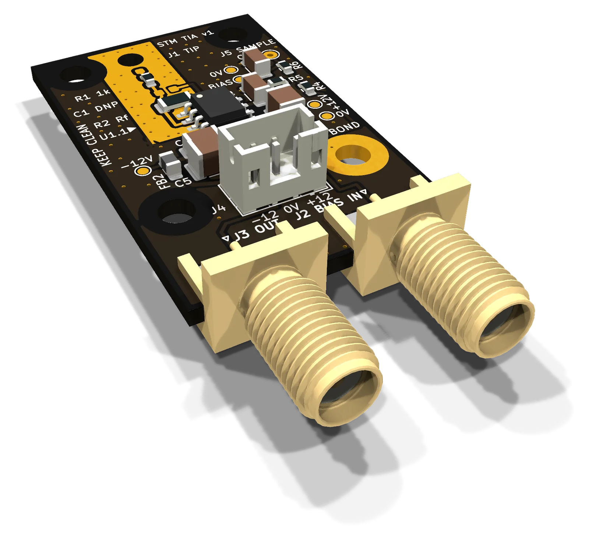

Glimt
Glimt bygger vetenskapliga instrument i Sverige. Det första, ett sveptunnelmikroskop, byggs och testas just nu.
Glimt builds scientific instruments in Sweden. The first, a scanning tunnelling microscope, is being built and tested now.
InstrumentInstruments
01 / 01
- 01 SveptunnelmikroskopSTM · atomär upplösning Scanning tunnelling microscopeSTM · atomic resolution Under utvecklingIn development
- 01PiezorörPiezo tube
- 02SpetsTip
- 03Tunnelgap, ~1 nmTunnelling gap, ~1 nm
- 04ProvSample

- FunktionFunctionFörstärker tunnelströmmenAmplifies the tunnelling current
- StorlekSize25 × 40 mm